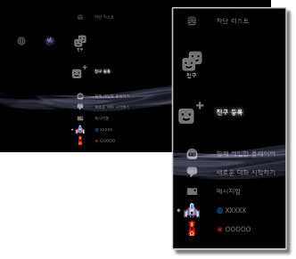

친구 > 친구 카테고리에 대하여
친구 카테고리에 대하여
이 기능을 사용하려면 시스템 소프트웨어를 업데이트해야하는 경우가 있습니다.
PlayStation®Network를 통해 다른 PS3™ 유저와 메시지를 주고 받거나 대화를 할 수 있습니다. 이러한 기능을 사용하려면 PlayStation®Network 계정을 작성(등록)해야 합니다.  (친구)에서는 아래와 같은 아이콘이 표시됩니다. 표시되는 아이콘은 사용 환경에 따라 다릅니다.
(친구)에서는 아래와 같은 아이콘이 표시됩니다. 표시되는 아이콘은 사용 환경에 따라 다릅니다.

 |
차단 리스트 | 차단 리스트에 등록한 상대방의 목록이 표시됩니다. |
|---|---|---|
 |
친구 등록 | 친구 리스트에 등록하기 위한 요청 메시지를 보낼 수 있습니다. |
 |
함께 게임한 플레이어 | PlayStation®3 규격 온라인 게임*을 함께 했던 플레이어의 목록이 표시됩니다. 여기서 상대방에게 메시지를 보내거나 친구 등록을 요청할 수 있습니다. |
 |
새로운 대화 시작하기 | 대화를 시작합니다. |
 |
텍스트 대화방 | 텍스트 대화방이 있을 때 표시됩니다. 새로운 텍스트 대화방이 있을 때에는  가 표시됩니다. 가 표시됩니다. |
| 음성/영상 대화방 | 대화를 할 때 표시됩니다. | |
 |
메시지함 | 새 메시지를 작성하거나 주고 받았던 메시지를 봅니다. |
 |
(자신의 온라인 ID) | PlayStation®Network 계정에서 설정한 자신의 아바타가 표시됩니다. |
|
(친구 이름) | 친구 리스트에 등록한 상대가 있을 때 표시됩니다. 이 아이콘을 선택하면 등록한 상대와 대화를 하거나 메시지를 주고 받을 수 있습니다. |
| * |
일부 게임에서는 이 기능이 지원되지 않을 수도 있습니다. |
|---|
알아두기
- PS3™에서는 친구 리스트에 있는 상대방을 "친구"라고 합니다. 또한 (친구)에서 주고 받는 메일을 "메시지"라고 합니다.
 (함께 게임한 플레이어)에는 50명까지 표시됩니다. 50명을 넘으면 오래된 플레이어부터 자동으로 삭제됩니다.
(함께 게임한 플레이어)에는 50명까지 표시됩니다. 50명을 넘으면 오래된 플레이어부터 자동으로 삭제됩니다.- 음성 대화를 하려면 별매의 음성 입출력 기기(헤드셋 등)가 필요합니다. 화상 대화를 하려면 음성 입출력 기기와 별매의 USB 카메라가 필요합니다.
- PS3™에서는 USB 헤드셋/Bluetooth® 헤드셋/EyeToy™ USB 카메라/PlayStation®Eye/USB 비디오 클래스에 대응하는 USB 카메라를 사용할 수 있습니다.
- USB 허브를 사용하여 USB 카메라를 연결하는 경우에는 USB 2.0에 대응하는 허브를 사용해 주십시오. USB 2.0에 대응하지 않는 허브에서는 이미지가 흐리거나 표시되지 않는 경우가 있습니다.
- 대응하는 주변기기의 종류 및 사용 방법에 대해서는 기기 판매 업체에 문의해 주십시오.